从业务关系到系统配合
青木家具厂已经算出了柜子需要的门板、提前期和机器负荷。接下来，它准备给虚构的梅岭区图书馆供货，还要在自己的商城接居民订单。物料计划能回答“该备多少”，却不能独自回答“谁向谁提供服务”“客户需求怎样传给上游”“商城怎样调用旧财务系统”。这一节沿着这些问题展开。梅岭区、青木及下面的居民均为虚构，业务事例用来解释模型。
3.8.1 政府信息化与电子政务：网站背后的服务与协作
梅岭区最初把办事指南放到了网站。居民能找到地址，仍要逐个窗口核对材料。后来，部门开始共享核验结果，居民可以提交申请并收到办理结果。改进发生在服务、组织和工作流程之间，网站只是其中一个入口。
电子政务利用信息技术及相关技术，把政府管理与服务职能集成起来，优化组织结构和工作流程，减少时间、空间和部门分隔造成的障碍。教材用三个组成部分观察它：部门内部的电子化、网络化办公；部门之间的网络信息共享和实时通信；政府通过网络与居民双向交流。目标还包括让互动更有效、友好、精简、透明，并改进政府业务的组织方式；增加网页或设备不能直接证明这些目标已经实现。

同一采购，分开看谁向谁做什么
政府、企（事）业单位、居民，是本版电子政务涉及的三类主体。图书馆采购公告面向企业，企业提交投标文件，两个政府部门再共享核验信息。三个行为可以出现在同一流程里，关系标签需要随具体行为判断。
- G2G：Government-to-Government，政府与政府
- 包含中央与地方、各部门之间，以及本版列入的政府与公务员、其他政府工作人员的互动。国家和地方人口基础信息的采集、处理、利用，计划管理、通信网络、内部财务系统、MIS和DSS等，都可在这个范围观察。图书馆采购资料在有关政府部门之间审核传递，是这里的协作例子。
- G2B：Government-to-Business，政府对企事业
- 政府向企业发布政策、法规和行政规定，提供营业执照、许可证、合格证或质量认证等。本例政府发布采购信息，是面向企业的信息服务。
- G2C：Government-to-Citizen，政府对居民
- 政府向居民提供规定、办事程序、主管部门和公共安全信息，以及户口、证件、牌照等服务。教材还列学校、医院、图书馆、公园等公共部门服务。居民通过网站接受证照办理服务，整体服务关系面向居民。
- B2G：Business-to-Government，企业对政府
- 企业按题设向政府提交税款、统计报表、工程竞投标材料，供应商品或服务，也可反馈困难、提出建议、申请帮助。青木向政府提交投标文件，观察的是这一具体行为。
- C2G：Citizen-to-Government，居民对政府
- 包含教材举例的个人税费、信息表格，以及居民参政议政、反馈意见、报警求助。居民向梅岭区提交道路积水的整改建议，是居民表达诉求的行为。
这里的C按政务语境展开为Citizen，与电商中的Consumer分别说明。先确定观察哪段业务，再看两端主体、服务或义务内容。居民主动点击“申请证照”，并不足以把整项政府证照服务改称C2G；若题目明确问居民提交意见这一行为，则可以按C2G判断。一次HTTP（Hypertext Transfer Protocol，超文本传输协议）请求的发起方向也不能代替业务关系。

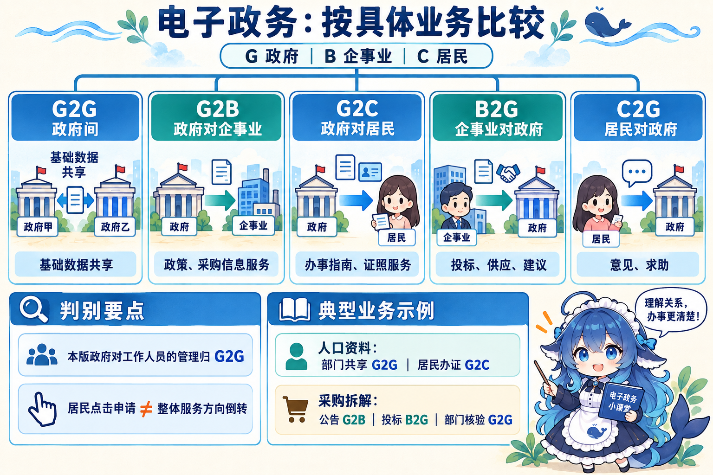
把“人口”换一个条件，分类就可能改变。政府内部处理共享人口基础信息，本版明确归政府间活动；居民接受户籍或证照服务，则按面向居民的服务关系判断。数据描述居民，不代表每次使用人口库都属于G2C。
其他模型可能把公务员服务独立称为G2E（Government-to-Employee）。本版将政府与工作人员互动列入G2G，五领域保持这一口径。2015、2016年的本地题答副本存在标答与解析或教材不一致的问题，本册按可核教材解释，不把有冲突的标答作为自测正答依据。
能提交申请以后，业务是否已经办结
梅岭区的网站逐步增加了功能：先提供静态指南，再显示动态服务信息，后来能够收取申请，最后完成审核并给出结果。教材用四阶段描述这种能力变化。
- 起步阶段：网上发布静态法规、指南、机构和联络信息。查到办事地址，尚未说明申请能在网上提交。
- 单向互动：除动态服务信息外，还向用户提供某种服务。与单纯静态发布相比，服务能力增加；不能仅从“网页经常更新”推断已办结业务。
- 双向互动：用户可在网上取得表格、填写，再发送给政府系统。教材报税表例强调这条往返交互，下载表格一个动作尚不足以证明完整双向提交。
- 网上事务处理：政府收到表格并实际审核处理，完成业务结果。原教学例既包括寄回退税支票，也包括电子划账到账；办结这一业务与每个物理动作均在线、全程无人、所有业务都需要付款，是不同条件。
现在把条件改为：一个事项可以在线提交，审核结果仍待处理；另一个事项已完成审核和结果交付。两项业务的成熟度不同。政府有数百业务流，要按轻重缓急、需要和实施条件分批建设，不能从一个事项成熟推断整个政府全部成熟。本版技术形式强调互联网基础设施和政府服务功能，属于教材写作时期的概述，本册不据此报告今日各国完成比例。
四阶段与六种应用，分别在问什么
四阶段问一项业务具备多少办理能力。六应用领域问信息化用在何处，教材依次列出：
- 面向社会：信息发布、查询、信访建议、反馈统计、公共服务、项目申报申请和法规文件。
- 政府部门之间：公文审核传递、视频会议、多媒体数据交换和同级信息交换。
- 政府部门内部各系统：公文流转处理、日程、会议、机关事务，以及面向不同管理层的统计分析。
- 内部核心数据：机要、秘密文件及管理，领导事务，重大事件决策和国家重大事务的数据分析处理。内部共享仍须满足权限与责任条件。
- 政府电子化采购：政府的电子商务。整个采购应用还可包含G2B公告、B2G投标和G2G内部核验等关系。
- 电子社区：在城市社区管理中应用信息手段。

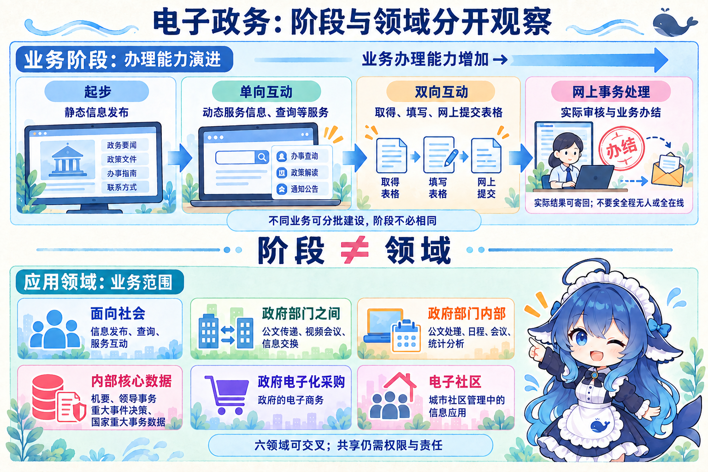
关联材料：2002年的建设框架
旧笔记常用“两网一站四库十二金”概括历史建设安排。实际核到的2002年中办发〔2002〕17号《指导意见》提出政务内网与外网、中央地方综合门户，以及人口、法人单位、自然资源和空间地理、宏观经济四个基础信息库。其十二个重要业务系统为办公业务资源、金关、金税、金融监管（含金卡）、宏观经济管理、金财、金盾、金审、社会保障、金农、金质、金水；名称并非全部以“金”开头。2002年指导意见
这是特定时期的建设任务，与六应用领域的分类范围不同。旧列表用金贸、金企凑数不符合该原文；也不能把当年的网络安排直接当作今日所有政府系统的固定工程规则。
3.8.2 企业信息化与电子商务：先确定企业要怎样经营
青木有了ERP，销售、采购和管理仍可能各看各的表：客户改变尺寸要求，设计没有及时知道；上游交期变化，生产计划没有收到消息。企业信息化需要把信息资源用进经营过程，评估各项业务能否配合。
企业是国民经济的基本单元，企业信息化是国家信息化的基础和关键。它利用现代信息技术，对信息资源深入开发、广泛利用，推动生产过程自动化、管理方式网络化、决策支持智能化、商务运营电子化。具体目标是优化业务活动，根本目的在于提高竞争能力，使企业平稳有效运作、快速回应紧急情况和机会，并向内外部用户提供有价值的信息。效率、效益与竞争力是要检验的效果，安装数量不能代替它们。
动态看，这个过程从局部走向全局，从战术层次走向战略层次；空间上从点到面，时间上分阶段渐进。核心涉及运用信息技术挖掘、编码知识，并管理业务流程。这里没有规定企业都须按MRP、闭环MRP、MRP II、ERP依次安装；那是上一节解释的历史发展轴。
两个实施方向与三项创新
厂长希望调整跨部门责任，车间人员希望减少重复录单。自上而下的实施要与制度、组织和管理创新结合；自下而上则要让业务人员直接受益、使用水平逐步提高。两方向可以同时配合，不能把一线操作便利当作可以省去总体规划的理由。推进信息化也涉及管理理念创新、管理流程优化、管理团队重组和管理手段革新；这些是管理中的变化，不另立第四项创新或四个固定阶段。

青木用CAD（Computer-Aided Design，计算机辅助设计）支持产品和工艺设计，通过网络了解技术信息，帮助成果转为生产，这是技术创新的例子。调整管理覆盖范围，是管理创新：本版从财务、资金管理，扩大到技术、物资、人力，再延伸研发设计制造、客户关系、供应链和电子商务。数据采集、存储、传递和共享为这些管理活动提供支撑，段落讲的是范围扩大，不能改造成四个固定上线阶段。
制度创新则涉及管理体制、机制与制度，明确岗位责任和监管安排，利用市场信息支持管理。网络工具不会自动完成责任调整。本版有经济转轨背景的历史论述，实际项目仍须按自身组织和业务条件评价。旧2013年三空题写“财务、物料”，本版这里写“财务、资金”，本册分别保存其文字身份。
管理模式为什么先于战略数据模型
青木打算从固定规格批量生产转向小批量定制。管理方式就需要明确谁确认尺寸、何时冻结设计、怎样承诺交期。若这些规则尚未讲清，直接画订单表，可能把旧工作方式固化进新系统。
教材的依据关系是：以企业战略规划为基础建立企业管理模式，管理模式是建立企业战略数据模型的依据。不是选择一个数据库产品就能自动反推企业战略。技术与业务融合还从三个层面展开：
- 战略层
- 分析当前业务策略与未来方向、内外供应链和管理模式，找出实现目标的关键因素及其与信息技术的联系，确定IT应用的驱动因素。
- 业务运作层
- 按对企业价值产生的贡献确定关键流程，从中取得关键业务需求，进而确定未来系统的主要功能。本例尺寸确认、设计冻结和交付承诺，需要连成可执行的业务规则。
- 管理运作层
- 辅助流程也影响日常管理，除应用功能需求外，还须提出相应IT体系，配合管理模式和组织架构。例如人员权限、责任划分与管理信息的取得。
三融合层和技术、管理、制度三创新的分类对象不同，不能逐一配成三个同义词。战略数据模型又按用途分成两种：数据库模型描述日常事务的数据及关系；数据仓库模型描述企业高层管理决策所需的信息及关系。前者在青木说明客户、订单、产品、采购等经营关系；后者说明管理者需要怎样按期间、产品或业务方向观察经营。

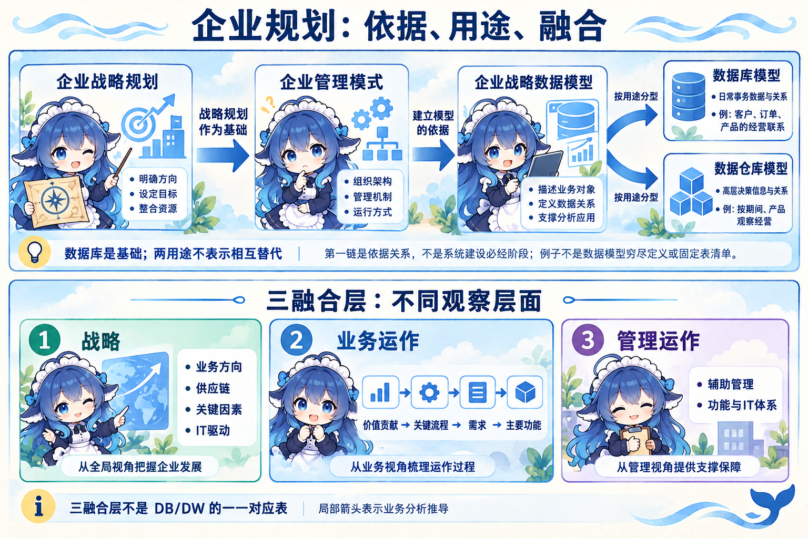
数据库模型是基础，应客观反映生产经营的内在联系。教材列它支撑办公自动化、计算机辅助管理、开发设计与生产自动化、Intranet（内联网）等。这里的模型与DB、DW、OLTP、OLAP的关系可衔接：数据组织、处理方式和软件产品分开看，不把战略数据模型误当两台服务器。

六种方法，按当前困难选择
青木的问题可能是流程需要重设计，也可能是共享数据不足。教材列出的六种企业信息化方法从不同切入点推进工作，可以组合；它们与信息系统规划方法、开发方法回答的问题也不同。
- 业务流程重构（BPR，Business Process Reengineering）
- 借助信息与网络技术，根本、彻底地重新设计组织结构和工作方法。本例重新安排销售、设计、制造对交期的共同责任，才涉及工作方式重设计；只把原审批表搬上屏幕，尚未证明完成BPR。组织变革可以包含在其中，不能从六方法名单未单列“组织机构变革”推出它与信息化无关。
- 核心业务应用
- 围绕企业赖以生存的主业应用计算机和网络。家具厂关注设计制造交付；教材石油企业的例子关注原油勘探开发生产。核心业务随企业而变，不是所有企业先选同一个软件模块。
- 信息系统建设
- 对大多数企业是信息化的重点和关键。建设要承接业务规则、功能和运行需求，程序编码只是其中一部分。
- 主题数据库
- 按企业业务主题或核心业务组织共享数据，针对业务繁多、流程复杂、局部开发容易割裂的情况。本例对齐订单、产品、客户等业务主题；仅给数据库起一个主题名，还未完成标识、语义与共享治理。数据仓库也可面向主题，不能只凭“主题”二字把两者等同。
- 资源管理
- 用计算机与网络支持资源管理，本版常见例为ERP、SCM。它可与BPR协同：使用SCM应用并不自动证明完成流程重构，也不妨碍它支撑重新设计后的流程。
- 人力资本投资
- 本版将一部分优秀员工看作可取得投资收益的资本，特别适合咨询、软件开发等依靠智力和知识的企业。名称是人力资本投资；把它换写为普通“人力资源管理”是旧综合题中的概念偷换。“部分优秀员工”本身符合本版，不能判为错误或要求全员才正确。

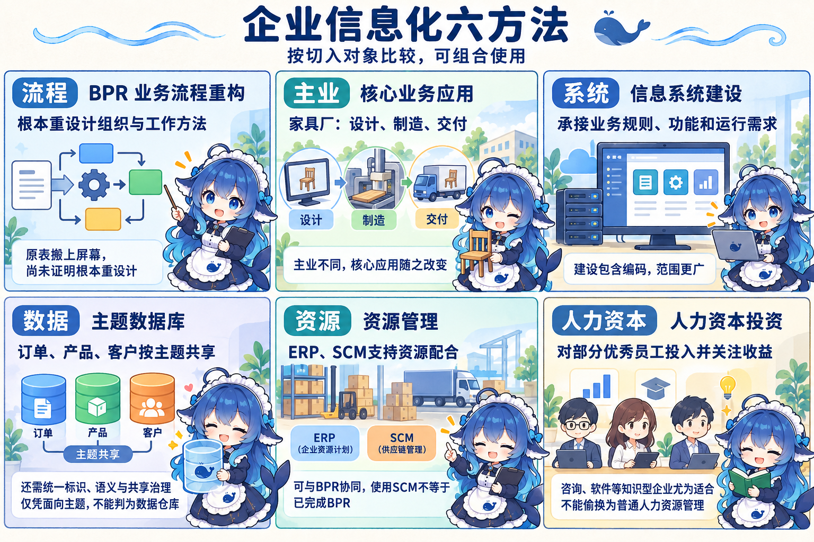
关联扩展：谁参加交易，谁承担哪项职责
青木商城的买卖双方还需要支付与信任支持。经典题的四角色模型列客户、商户、银行、认证中心：客户提出购买需求，商户提供商品服务并组织履约，银行提供相关资金结算服务，认证机构签发证书支持信任。这里讲的是特定交易模型的职责，实际参与者可以更多。题源的商户范围还可包含储运商，物流可以参与在线履约；政府也能是采购方。网上订购与最终交付、付款方式的范围可参照OECD 2023统计定义，不把它当本版原句。
CA在RFC5280规范中展开为Certification Authority，中文认证机构/认证中心；Certificate Authority是教材和工程中的常见称呼。它签发的证书用于支持主体身份标识与公钥的绑定。使用者还要判断信任锚、证书路径、有效性、撤销及用途政策等条件。证书、消息签名、业务权限和法律层面的抗抵赖各有成立条件，不能从“存在CA”推出每笔交易绝对安全、每个操作均获授权或商家一定履约。银行与第三方支付网关也不能普遍画成同一个实体。RFC5280
交易主体模式另问两端是谁：B2B（Business-to-Business）是企业对企业，青木采购板材即一例；B2C（Business-to-Consumer）是企业对消费者，居民在青木商城买柜子；C2C（Consumer-to-Consumer）是消费者之间，居民转让自己的旧家具。这一段的C是Consumer。O2O（Online-to-Offline）描述线上到线下的渠道联系；居民在线订购、到店体验或线下接受安装服务，可以同时是B2C交易和O2O渠道协作。它与前三者的主体分类不同轴。

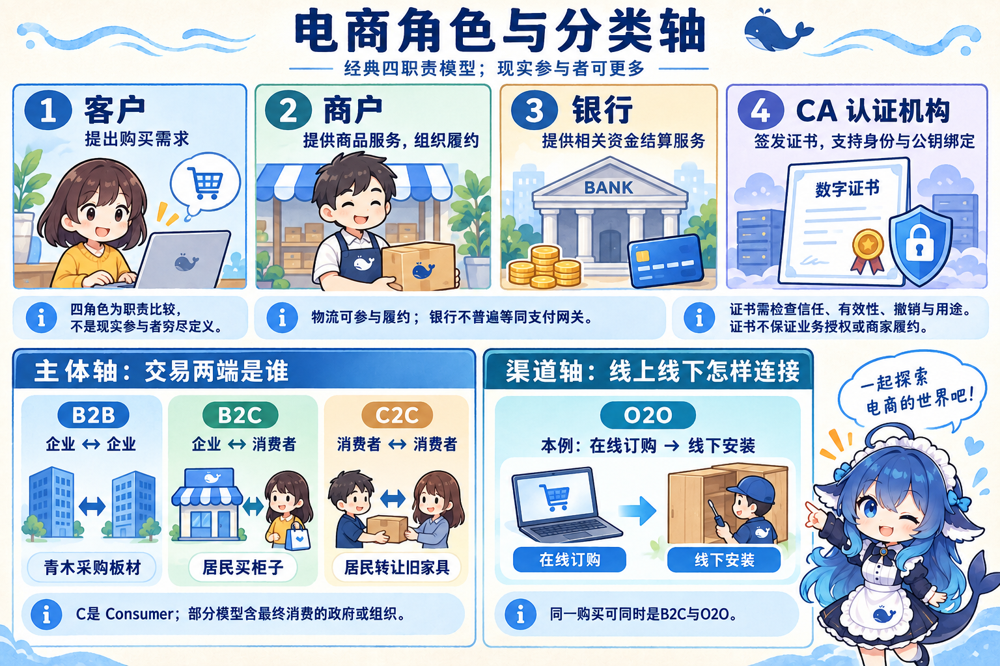
政府采购在常见按双方身份的交易视角可称B2G；清华样章另有将最终消费的政府、组织纳入Consumer的扩展口径，标签须随题设模型判断。在电子政务段，B2G侧重企业向政府投标、供应等具体行为。O2O也有Offline-to-Online（线下到线上）的用法，本例按线上到线下展开。看同一采购或购买，需要说明观察交易关系、渠道还是流程中的服务动作，不能只贴一个缩写。
关联扩展：五层支撑与两个共同环境
清华出版社《电子商务：基础与应用（第3版）》公开样章图1-6介绍的框架，把基础设施分为四层，再在其上开展电子商务应用，合计五层。从下向上：
- 网络基础层：提供网络连接和传输基础。
- 多媒体内容和网络表示层：组织、表示网页及多媒体内容。
- 消息或信息发布与传输层：支持消息、业务信息的发布和交换，原图举EDI、E-mail、HTTP等。
- 一般业务服务层：提供安全、认证、电子支付、目录服务等共同能力。
- 电子商务应用层：具体业务应用，例如商城、网上采购或供应链协作。
旁边的两个支柱是公共政策、法律、隐私等社会环境，以及文档、安全、网络协议的技术标准。它们跨层支撑，不是第六、第七个执行步骤。原页技术例具有版本背景，本册以职责解释，不据此推荐具体旧技术。出版社公开样章，第27–28页
图中的OSI指Open Systems Interconnection（开放系统互连）的网络参考模型语境。网络分层与本图电商支撑职责的分类对象不同，名称相近不能直接对号入座；此处也不指政务报告中的同名指标。ISO/IEC 7498-1模型说明

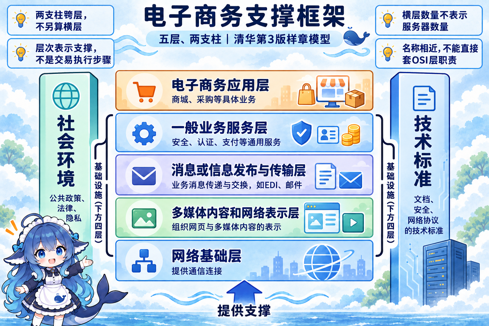

关联扩展：订单怎样成为对方能处理的报文
青木把采购单拍成照片发给板材商，对方再抄进系统。传输用了网络，单据语义和录入仍靠人解释。若双方约定标准报文，让各自程序转换、校验并接入业务应用，交换机制就改变了。
EDI（Electronic Data Interchange，电子数据交换）按约定标准交换结构化业务报文，支持伙伴计算机之间传输和处理。实现时可以检查三个依赖：数据标准、软硬件、通信网络；这是本地教学材料的三要素归纳，本册不把“恰好三”冒作规范强制组成。标准说明单据结构与字段语义，转换软件对接内部格式，通信设施把报文送到对方。
自编采购例的链条是：青木应用产生对外采购订单数据，映射成约定的标准报文，经网络发送；板材商接收、校验、映射为内部格式，再交业务应用处理。异常时仍可能需要人工核查，转换成功也不保证对方已经接受订单、库存充足或立即发货。

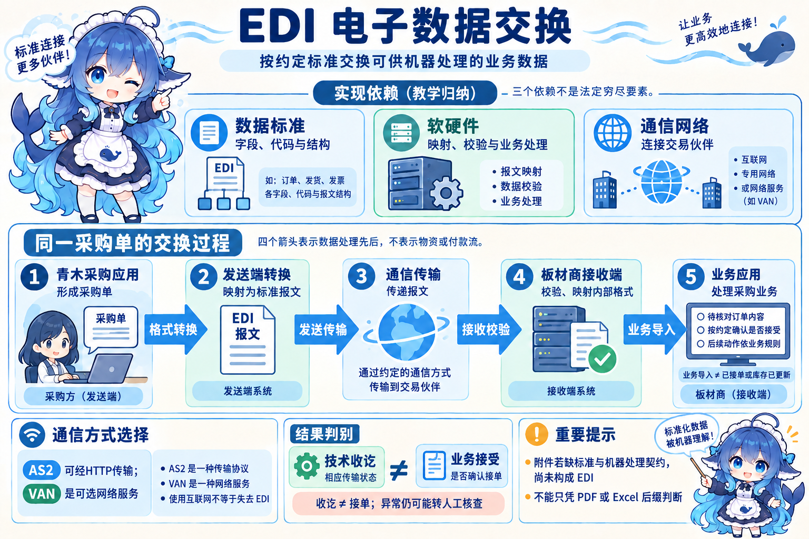

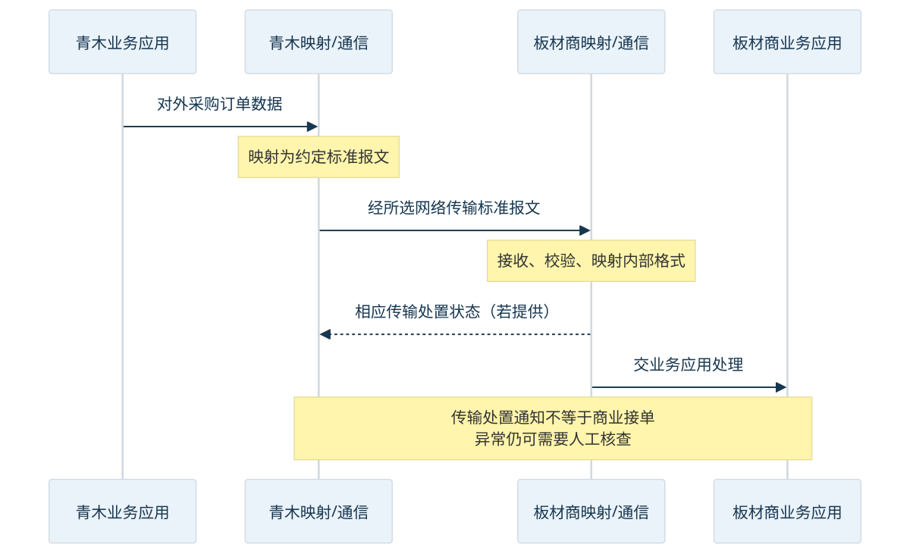
把网络条件换成互联网，并不自动使交换失去EDI性质。AS2（Applicability Statement 2）的RFC4130规定可经HTTP交换EDI、XML（Extensible Markup Language，可扩展标记语言）等业务数据。VAN（Value-Added Network，增值网络）是可能的通信方案，不是所有EDI都必须租用的专线。实施成本还取决于伙伴接入、映射、网络与维护范围。它常用于企业间规范化单据交换，但“典型B2B”不能推成其他场景一律禁止。RFC4130
判断也不只看文件扩展名：本例照片邮件缺少标准报文与自动处理条件；若另一系统有明确的数据标准和机器处理契约，需要按完整条件判断，不能仅见PDF或Excel就作通用结论。EDI回答怎样交换单据，B2B回答双方身份，SCM回答怎样管理供需关系。
关联扩展：客户关系与供需协作
居民订柜子后提出低噪声铰链要求，安装后又询问保养方法。CRM（Customer Relationship Management，客户关系管理）用客户信息支持需求响应、销售服务和长期关系经营。联系人信息有基础作用，只有一份通讯录还不能说明客户需求怎样得到跟进；关系、客户价值和收益是管理目标，也需要实际效果验证。
Oracle介绍的三种常见侧重可以配合：Operational CRM（运营型）支持日常营销、销售、客户服务自动化；Analytical CRM（分析型）连接客户数据并分析、报告，帮助判断需求和经营；Collaborative CRM（协作型）支持不同团队、渠道或系统共享客户信息。它们不是必须安装的三层，也不是互斥产品。营销、销售、客服三前台职能，旧题加入BI后的四模块，以及这三类型，各自有分类口径。Oracle三类CRM说明
SCM（Supply Chain Management，供应链管理）协调从供应商到客户的资源和业务，涉及采购、制造、物流、数据与资金等。看本例的信息：青木向板材商发采购订单，说明需要什么、何时需要；板材商向青木发完工或发运状态，说明供给已进展到哪里。前者是需方到供方的需求信息，后者是供方到需方的供应状态。Oracle SCM说明

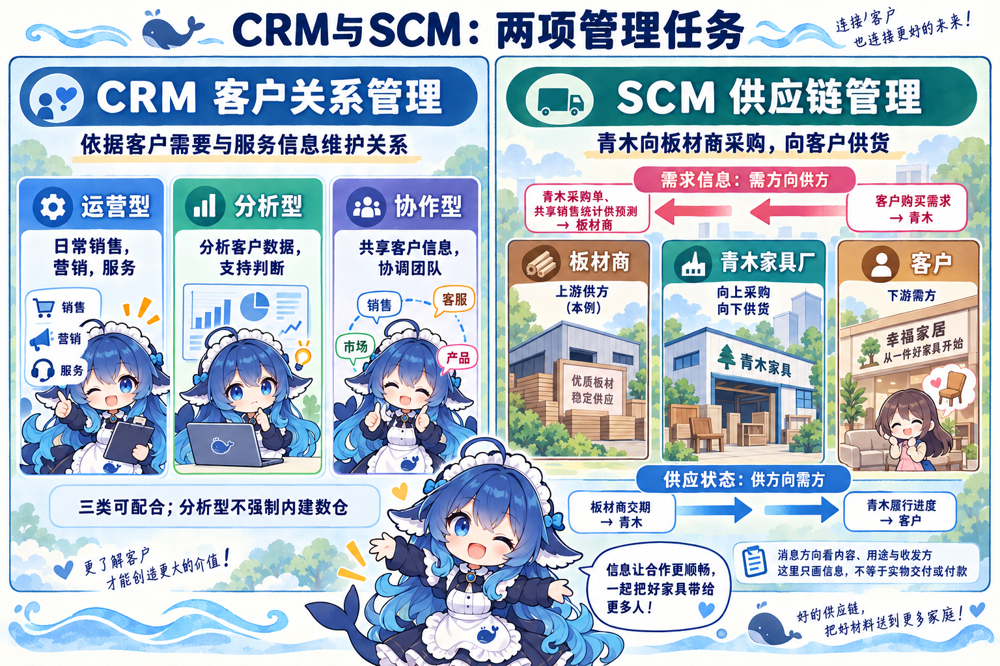
换一下用途，文件名的口诀就不够用：青木把内部销售统计分享给上游作预测，它可以成为需求预期输入；生产计划由谁向谁提供、包含什么需求，也须说清。旧SCM题的完工报告选项符合给定供应信息语境，不能据此宣称销售报告永远不支持供需协同。
物流、资金、信息三流仍各有时点。本例签了采购合同，货还没交付，付款也未发生；不能把合同记录当作货款已经流动或所有权必然已转。可以回看ERP三流与物料、能力计算：SCM传入需求与状态，ERP计划、客户管理和伙伴协作可由不同系统共同实现。
关联扩展：EAI把已有系统的哪些对象接起来
青木的商城、客户服务和旧财务系统各自有用。一次订单不能靠员工在三个窗口重复抄写。EAI（Enterprise Application Integration，企业应用集成）让已有应用交换数据、调用能力并配合业务。IBM的一手说明支持这个用途及API（Application Programming Interface，应用程序编程接口）、中间件等机制；下面四对象采用本地完整题考法，未将其写成IBM页面给出的固定分类标准。IBM EAI说明
- 表示集成
- 把多个应用界面组织在统一入口，让用户操作时感到一个整体。只说明统一界面，并未说明后台功能、数据已经怎样集成；界面入口也可与其他方式同时存在。
- 数据集成
- 转换、共享或同步数据。例如对齐商城和客服的客户标识。相同结构、格式还不等于业务语义一致：一个系统“已完成”指订单审核，另一个指安装验收，需要明确映射与治理。
- 控制／功能集成
- 通过接口调用已有业务能力。例如商城调用旧财务系统的合法入账接口。没有源码、没有直接数据库权限，但有授权API时，仍可实现功能调用；这两个权限缺口不能自动推成只能做表示集成。
- 业务流程集成
- 编排跨系统活动，使接单、采购、入库、交付以及异常处理得到协调。要明确各步骤的前置条件、责任和失败后的处理；某些业务需要补偿或人工协调，不能保证制造和外部交付都可以自动回滚。

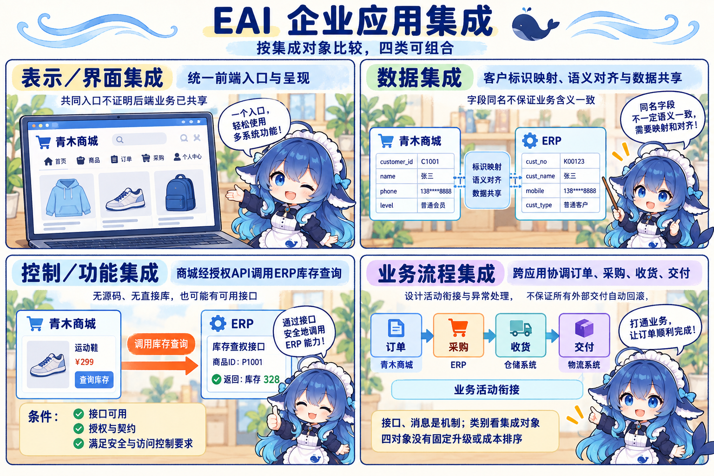

这类接口定义软件之间可请求、返回哪些数据或功能的契约。本例库存查询通过授权接口调用能力；接口存在仍须满足契约、权限与安全要求。IBM API说明
同样一条消息通道，传数据副本、调用业务能力、协调跨系统流程，所观察的集成对象不同。选方案还要核可用通道、接口权限和业务要求。只有题设明确无接口、无数据通道、仅有可用界面，才可在这一限制下讨论界面入口方案；不要从“老系统”三个字猜权限。
回到采购和普通订单
梅岭区发布采购信息、青木投标、部门内部核验，分别按G2B、B2G、G2G业务关系观察；同一政务业务是否办结，用四阶段判断，其所在应用范围另按六领域识别。青木则先把战略、管理方式和业务需求讲清，再选择数据模型及可配合的建设方法。
居民在商城购买家具，是B2C交易。CRM跟进客户需求，SCM向伙伴传递供需信息，EDI按标准交换业务单据，EAI安排已有系统的界面、数据、功能或流程配合。电商支撑框架说明这些业务依靠哪些共同能力，ERP继续核物料、时间和机器负荷。每个名称都回到一个可检查的问题，再改变参与方、消息内容、可用接口或办结状态，类别与选法就有了依据。